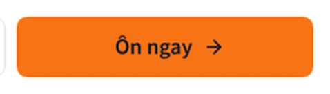
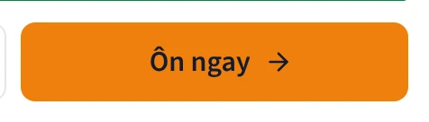
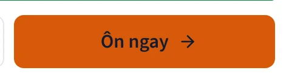
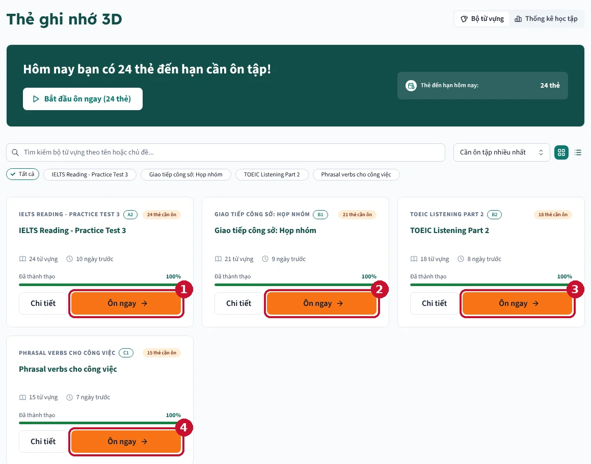
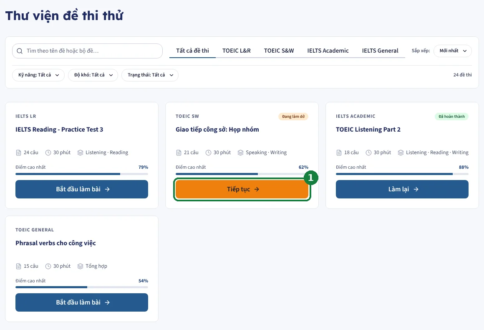
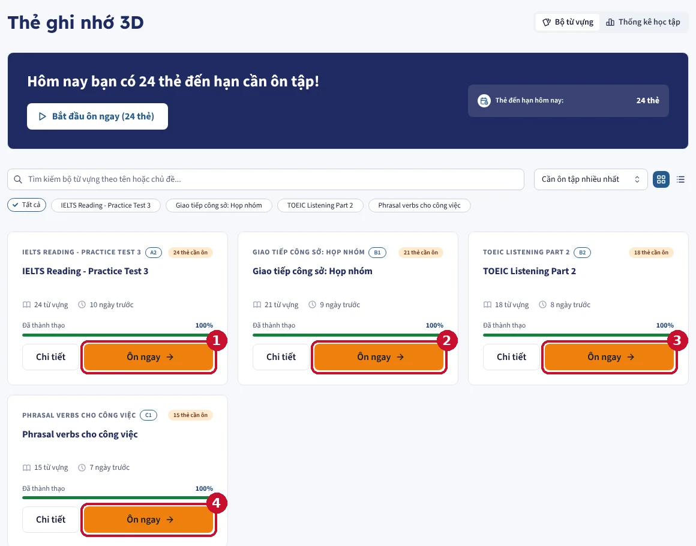
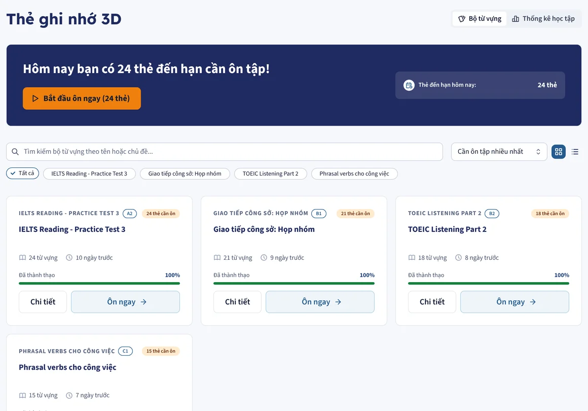

Giải thích hai điểm cần bạn quyết trong phương án đổi bảng màu. Ảnh chụp từ code thật của branch testing.
Nút cam là nút quan trọng nhất trên màn (Bắt đầu học, Ôn ngay, Đăng nhập). Chữ trên nút cần đọc rõ: chuẩn WCAG yêu cầu độ tương phản giữa chữ và nền ít nhất 4.5:1. Màu cam của logo khá sáng, nên chữ trắng trên nó bị mờ. Có 4 cách xử lý:
Cam Tailwind, chữ gần đen. Đọc rõ, nhưng sắc cam không phải cam của logo.
Đẹp và quen mắt, nhưng chữ mờ, khó đọc ngoài nắng hoặc với người kém mắt. Bỏ.
Phải làm cam tối đi mới đủ tương phản. Kết quả ngả màu nâu gạch, mất độ rực của ngọn lửa.
Giữ đúng cam lửa của logo, chữ dùng navy của logo. Đây đúng là cặp màu trong logo: lửa cam đặt trên vòng navy. Branch hiện tại cũng đang dùng chữ tối trên nút cam (A), nên đây chỉ là đổi sắc độ, không đổi cách làm.



File docs/design-system.md của branch có quy tắc: "Orange appears on at most one action per view", tức mỗi màn chỉ có tối đa một nút cam. Lý do: cam là màu gây chú ý mạnh nhất. Một nút cam thì mắt biết ngay phải bấm đâu. Nhiều nút cam thì chúng tranh nhau, màn hình trông rực và rối. Đây cũng là một phần lý do bạn thấy giao diện "pha trộn quá nhiều màu".



